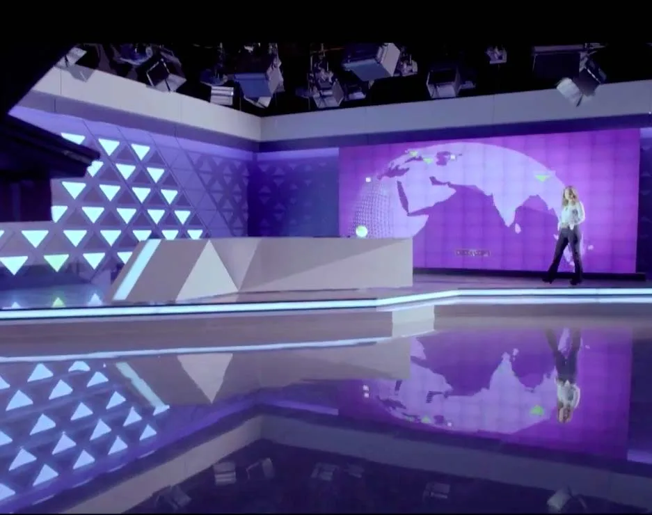

Marketing y comunicación
Ahora Noticias
MEGA · Sámara · Chile · 2013
Mi aportación. Dirección de Optimus · colaboración con Sámara

01
Contexto
La renovación de la identidad audiovisual del informativo de MEGA.
02
Necesidad
Conectar la imagen de marca, la escenografía y los criterios de realización del programa.
03
Estrategia
Mi intervención se sitúa en la dirección de Optimus y la coordinación de su aportación con Sámara. El equipo desarrolló identidad gráfica y audiovisual, escenografía y soluciones técnicas para el plató.
04
Impacto
La nueva identidad se implementó en el informativo. El dosier recoge además formación del equipo gráfico de MEGA a cargo de Optimus; no se presenta como docencia personal de Emilio.

Créditos y alcance
Destinatario: MEGA. Intermediación y colaboración: Sámara. Diseño y realización audiovisual y escenográfica: Optimus Medina Riley.
¿Qué tienes entre manos?
Podemos empezar por una necesidad concreta o por una idea que aún necesita forma.